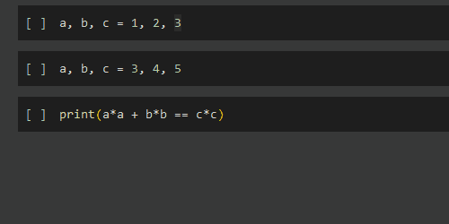
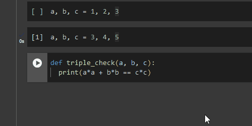

Today's lecture loosely adapted from here but in a nonobvious way so maybe stay away from that link for now.
Python
This semester we will use Python
Python is a language, but a novel kind of language.
Python is free,
Python is very widely used,
Python is flexible,
Python is relatively easy to learn,
and Python is quite powerful.
It may be the case that Python can be thought of as the language in which a machine may think.
Deliberately weak claim.
Pythogoras
Let's review the homework
If I were you I would:
Leave my original homework unaltered.
Append anything you learn today to the end.
Thereby preserve a record you can look back on.
Some elements of the homework were "deliberately annoying"
We want to introduce "problems" or even just annoyances before we introduce their solutions.
This is supported by some educational literature - you'll just have to let me know what you think.
Review:
Homework 1 Pythagorean Triples
Write code to define positive integers , , and of your own choosing.
A few solutions.
Multi-line, multi-cell.
Create 3 "Code" blocks.
Assign one variable in each.
a = 3 b = 4 c = 5
A good way to make quick changes to individual variables.
Cell structure is more complicated.
Review:
Homework 1 Pythagorean Triples
Write code to define positive integers , , and of your own choosing.
A few solutions.
Multi-line, single-cell.
Create 1 "Code" block.
Make three lines, one variable in each.
a = 3
b = 4
c = 5
A good way to use fewer cells.
Individual cells are more complex.
This is the Gemini (AI) solution.
Review:
Homework 1 Pythagorean Triples
Write code to define positive integers , , and of your own choosing.
A few solutions.
Single-line
I haven't shown you this, but I when dealing with a "triple" I like to assign it all at once.
I use commas to assign 3 variable names to 3 values.
a, b, c = 3, 4, 5
I was able to get Gemini to do this with the following prompt:
Write code to define positive integers a, b, and c of your own choosing in a single line
This line is harder to read and weirder to edit, but
There are many fewer lines.
Be sure to introduce yourselves!
Group 1
Group 2
Group 3
Group 4
Question #1
How do you decide how to express yourself in a constructed language?
Think about a possible answer on your own
Discuss your answers with the rest of the group
Record a summary of each group’s discussion
If your initial answer is e.g. "I just do the first thing I think of" or "I just follow a guide" - dig deeper.
Why is that the first thing you think of?
How do you choose a guide?
How do you decide what prompt to give an AI?
Review:
Homework 1 Pythagorean Triples
Calculate , , and
As with picking values, a few options:
Multi-cell
Multi-line / single-cell
Single-line
But an addition wrinkle: is not meaningful Python
This is an example of something that exists in a natural language but not a constructed langage.
Python, and many other programming languages, often lack to notion of "superscripts" or raised text.
Natural languages, which may have initially been written by hand on paper, can easily accomodate these features.
Review:
Homework 1 Pythagorean Triples
is not meaningful Python
So what do we do?
"Squaring" can be thought of, in my mind, in two ways.
Multiply: I square some value by multipling that value by itself.
a_squared = a * a
Exponentiation: I square some value by raising it to the second power.
a_squared = a ** 2
I should also verify:
a ** 2 == a * a
Review:
Homework 1 Pythagorean Triples
is not meaningful Python
So what do we do?
"Squaring" can be thought of, in my mind, in two ways.
I gravitate toward multiplication.
In my mind: multiplication is easier that exponentiation, so I'll use that.
So I could write, perhaps:
a_2, b_2, c_2 = a*a, b*b, c*c
Gemini did something quite different (for me):
# prompt: Calculate a2, b2, and c2
a2 = a**2
b2 = b**2
c2 = c**2
Question #2
What are some reasons humans and machines may choose different ways to solve the same problems?
Think about a possible answer on your own
Discuss your answers with the rest of the group
Record a summary of each group’s discussion
Did you use the same or different solutions than a machine might?
Review:
Homework 1 Pythagorean Triples
Check to see if your three values form a Pythagorean Triple such that .
Have Python print True or False to verify that you do, or do not, have a Pythagorean Triple defined.
Hint: You will need to use double and single equals as well as print()
We use double equals to determine the true/false value of the equality.
a_2 + b_2 = c_2
We can use single equals again to assign the result to a variable.
is_triple = a_2 + b_2 = c_2
We can use print() to "print" to true/false
print(is_triple)
We could, of course, do everything in a single line
print(a*a + b*b = c*c)
I asked for print make an important point:
is_triple == print(is_triple) # this is "False"
Printing true/false and determining true/false are different things - it's good to keep this in mind.
Question #3
Reflect on what you learned about
Python
Thinking
Language, and
Machines
Discuss your answers with the rest of the group
Record a summary of each group’s discussion
Fake Functions
Suppose we wish to check more than one triple.
We could, for example, have two Code cells:
In the first, we assign variables:
a, b, c = 3, 4, 5
In the second, we print:
print(a*a + b*b == c*c)
Then it is simply a matter of changing the variables and "running" two cells.

Essentially, we have created a way to take three numbers and return a true/false value.
We term this idea a function.
Functions
Python contains the "def" keyword to make functions:
Let's see it in action.
Functionless
Function-ily

It looks like this:
def triple_check(a, b, c):
print(a*a + b*b == c*c)
Now: explore how functions work and can be used.
Recall:
Exercise A.5 One or two equal signs.
Select any two integers and assign them to any two variable names, such as "x" or "y"
It will help latter if the first value is much larger than the second, but you can always change latter.
Calculate the integer "quotient" (the result of integer divison) and remainder of the two values
What operations should you use?
Store the result of each in a variable, for latter
Use "double equals" to check if
the smaller value (say, y)
times the quotient (say, q)
plus the remainder (say, r)
is equal to the larger value (say, x)
For Today:
Exercise A.6 A novel function.
Write a function that, given two numbers, say "a", "b", prints "True" if:
the second value (say, y)
times the quotient of the two values
plus the modulo of the two values
is equal to the first of the two values (say, x)
And prints "False" otherwise.
Question #4
What are some ways you think or act that feel like functions?
Think about a possible answer on your own
Discuss your answers with the rest of the group
Record a summary of each group’s discussion
In your group, you may also wish to discuss how you feel about functions, Python, Opening Days, etc. Feel free to do so!
No Homework
Be ready to begin the first week of your other classes!